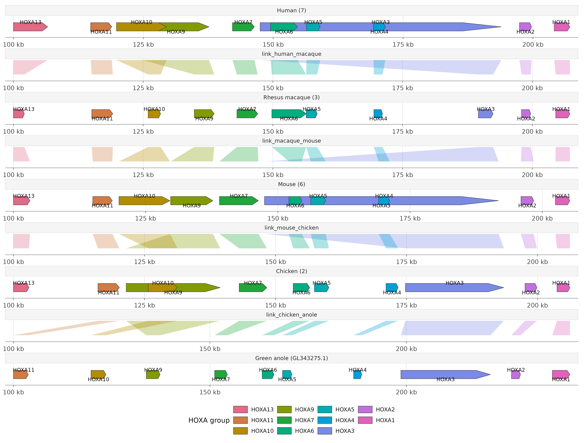

Overview
This demo uses a small curated Ensembl release 115 dataset to show
HOXA/Hoxa gene synteny across human, rhesus macaque, mouse, chicken, and
green anole. The dataset is bundled as plot-ready TSV files under
inst/extdata/hoxa_ensembl115.
The figure uses geom_genetag() for HOXA gene intervals
and geom_synteny_link() for orthology/synteny ribbons
between adjacent species. The plotted x coordinates are oriented so each
cluster reads in a comparable HOXA13-to-HOXA1 order. Original Ensembl
coordinates are retained in the TSV files.
library(ggexon)
#> Loading required package: gtable
#> Loading required package: ggforce
#> Loading required package: ggplot2
#> Loading required package: ggridges
#> Loading required package: dplyr
#>
#> Attaching package: 'dplyr'
#> The following objects are masked from 'package:stats':
#>
#> filter, lag
#> The following objects are masked from 'package:base':
#>
#> intersect, setdiff, setequal, union
#> Loading required package: rtracklayer
#> Loading required package: GenomicRanges
#> Loading required package: stats4
#> Loading required package: BiocGenerics
#> Loading required package: generics
#>
#> Attaching package: 'generics'
#> The following object is masked from 'package:dplyr':
#>
#> explain
#> The following objects are masked from 'package:base':
#>
#> as.difftime, as.factor, as.ordered, intersect, is.element, setdiff,
#> setequal, union
#>
#> Attaching package: 'BiocGenerics'
#> The following object is masked from 'package:dplyr':
#>
#> combine
#> The following objects are masked from 'package:stats':
#>
#> IQR, mad, sd, var, xtabs
#> The following objects are masked from 'package:base':
#>
#> anyDuplicated, aperm, append, as.data.frame, basename, cbind,
#> colnames, dirname, do.call, duplicated, eval, evalq, Filter, Find,
#> get, grep, grepl, is.unsorted, lapply, Map, mapply, match, mget,
#> order, paste, pmax, pmax.int, pmin, pmin.int, Position, rank,
#> rbind, Reduce, rownames, sapply, saveRDS, table, tapply, unique,
#> unsplit, which.max, which.min
#> Loading required package: S4Vectors
#>
#> Attaching package: 'S4Vectors'
#> The following objects are masked from 'package:dplyr':
#>
#> first, rename
#> The following object is masked from 'package:utils':
#>
#> findMatches
#> The following objects are masked from 'package:base':
#>
#> expand.grid, I, unname
#> Loading required package: IRanges
#>
#> Attaching package: 'IRanges'
#> The following objects are masked from 'package:dplyr':
#>
#> collapse, desc, slice
#> Loading required package: Seqinfo
#> Loading required package: grid
#> Loading required package: tidyr
#>
#> Attaching package: 'tidyr'
#> The following object is masked from 'package:S4Vectors':
#>
#> expand
#> Loading required package: scales
#> Loading required package: reshape2
#>
#> Attaching package: 'reshape2'
#> The following object is masked from 'package:tidyr':
#>
#> smiths
#> Loading required package: rlang
#> Loading required package: vctrs
#>
#> Attaching package: 'vctrs'
#> The following object is masked from 'package:dplyr':
#>
#> data_frame
#> Loading required package: S7
#>
#> Attaching package: 'ggexon'
#> The following objects are masked from 'package:ggplot2':
#>
#> .expose_data, .ignore_data, after_scale, after_stat, AxisSecondary,
#> check_device, class_coord, class_derive, class_facet, class_ggplot,
#> class_ggproto, class_guide, class_guides, class_labels,
#> class_layer, class_layout, class_mapping, class_rel, class_S3_gg,
#> class_scale, class_scales_list, class_theme, class_waiver,
#> class_zero_grob, derive, dup_axis, flip_data, flipped_names,
#> gg_dep, ggplotGrob, has_flipped_aes, remove_missing, sec_axis,
#> should_stop, stage, stat, waiver
demo_dir <- system.file("extdata", "hoxa_ensembl115", package = "ggexon")
genes <- read.delim(file.path(demo_dir, "hoxa_genes.tsv"), check.names = FALSE)
links <- read.delim(file.path(demo_dir, "hoxa_links.tsv"), check.names = FALSE)
species <- read.delim(file.path(demo_dir, "hoxa_species.tsv"), check.names = FALSE)
track_levels <- as.vector(rbind(
species$species[-nrow(species)],
paste0("link_", species$species[-nrow(species)], "_", species$species[-1])
))
track_levels <- c(track_levels, species$species[nrow(species)])
track_labels <- setNames(track_levels, track_levels)
track_labels[species$species] <- paste0(
species$display_name,
" (",
species$source_seqname,
")"
)
hox_levels <- paste0("HOXA", c(13, 11, 10, 9, 7, 6, 5, 4, 3, 2, 1))
hox_palette <- setNames(
grDevices::hcl.colors(length(hox_levels), "Dark 3"),
hox_levels
)
genes$track <- factor(genes$track, levels = track_levels)
links$track <- factor(links$track, levels = track_levels)
genes$hox_group <- factor(genes$hox_group, levels = hox_levels)
links$hox_group <- factor(links$hox_group, levels = hox_levels)
ggexon() +
geom_synteny_link(
data = links,
mapping = aes(
tspecies = tspecies,
tchr = tchr,
tstart = tstart,
tend = tend,
qspecies = qspecies,
qchr = qchr,
qstart = qstart,
qend = qend,
strand = strand,
group = group,
fill = hox_group
),
colour = NA,
alpha = 0.32,
inherit.aes = FALSE,
show.legend = FALSE
) +
geom_genetag(
data = genes,
mapping = aes(fill = hox_group),
exon_height = 0.58,
arrow_fraction = 0.16,
show_label = TRUE,
label_position = "outside",
label_direction = "top:bottom",
label_size = 2.15,
label_link = FALSE,
label_max_lanes = 2,
label_panel_width = 175,
linewidth = 0.18,
colour = "grey20"
) +
facet_genomics(
vars(track),
scales = "free_x",
ncol = 1,
labeller = ggplot2::as_labeller(track_labels)
) +
scale_fill_manual(values = hox_palette, drop = FALSE, name = "HOXA group") +
scale_x_continuous(
labels = function(x) paste0(round(x / 1000), " kb"),
expand = ggplot2::expansion(mult = c(0.015, 0.015))
) +
labs(x = "Oriented position in HOXA window", y = NULL) +
theme_ggexon_track(
base_size = 8,
show_x_axis = TRUE,
show_x_grid = TRUE,
show_legend = TRUE
) +
theme(
panel.spacing.y = grid::unit(0.05, "lines"),
strip.text.y = element_text(angle = 0, hjust = 0, face = "bold", size = 7.5),
strip.background = element_rect(fill = "grey96", colour = "grey82", linewidth = 0.25),
legend.position = "bottom",
legend.key.height = grid::unit(3, "mm"),
legend.key.width = grid::unit(6, "mm"),
plot.margin = margin(6, 8, 6, 6)
)